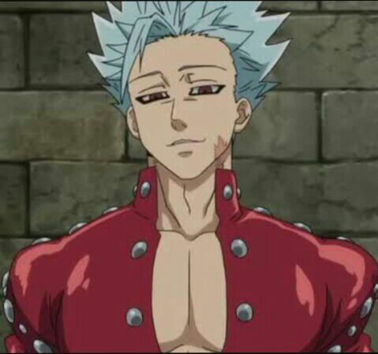
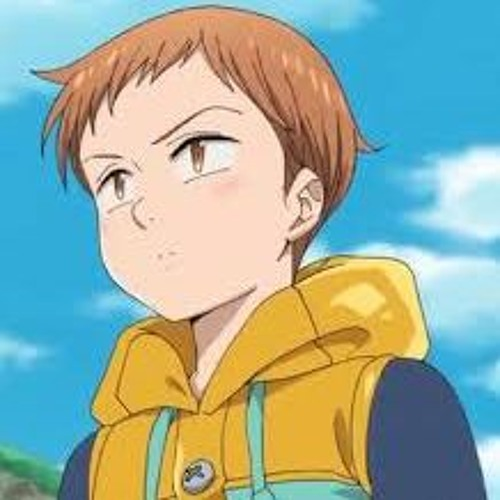
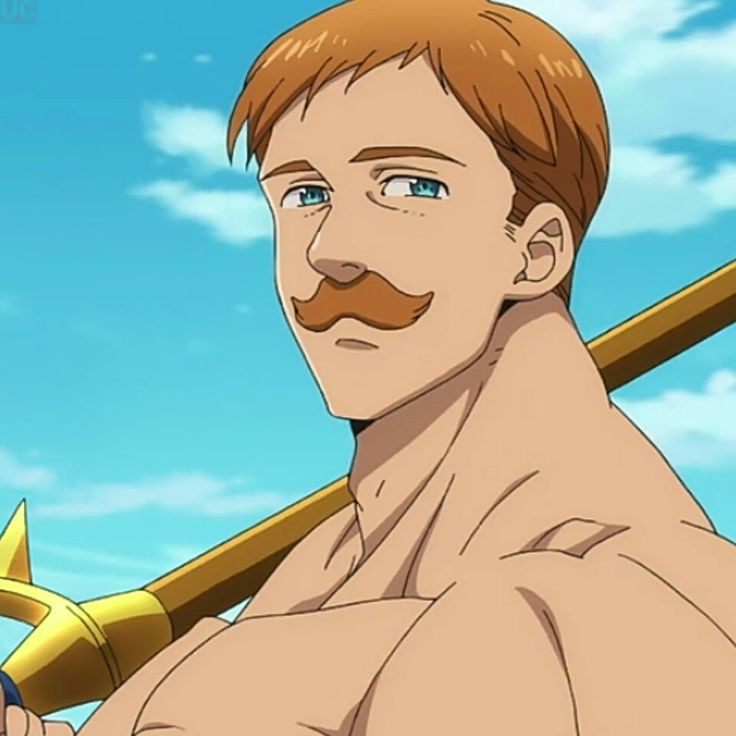
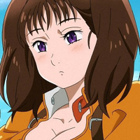
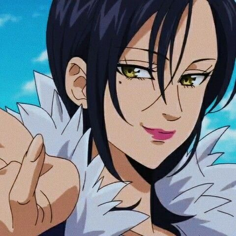

- Pecado da Ira
- Meliodas é o líder dos Sete Pecados Capitais, carregando o título de Pecado da Ira do Dragão. Ele é o proprietário do renomado bar Chapéu de Javali, e o principal protagonista da série. O seu Tesouro Sagrado é a Espada Demônio Lostvayne e seu poder é o Full Counter.
.jpg)
- Cadastre-se
- Pecado da Ganância
- Ban é um membro dos Sete Pecados Capitais, conhecido como o Pecado da Ganância da Raposa. Após o grupo se separar, Ban foi preso pelo grupo Presas Tortuosas na Prisão de Baste, mas escapou quando soube que Meliodas estava vivo à sua procura. Além de ser imortal, ele é conhecido por sua habilidade, Snatch.

- Cadastre-se
- Pecado da Preguiça
- King, ou melhor Harlequin é o Guardião e Rei da Floresta das Fadas, que por setecentos anos viveu com a sua irmã Elaine que é uma sacerdotisa da floresta neste reino. Quando seu melhor amigo Helbran saiu em uma exploração pra conhecer melhor sobre os humanos cujo o mesmo era apaixonado pela cultura.

- Cadastre-se
- Pecado do Leao
- Escanor é o filho mais novo de um rei, pertencendo à família do Reino de Castellio. Quando criança, sofria bullying de seu irmão mais velho, Daymond (príncipe de Castellio), que tinha ciúmes do tratamento e da atenção que Escanor vinha recebendo de seus pais.

- Cadastre-se
- Pecado da Inveja
- Diane é um membro dos Sete Pecados Capitais e é conhecida como o Pecado da Inveja da Serpente. Ela é um membro do Clã dos Gigantes, e é muito maior do que as pessoas comuns, incluindo seus companheiros dos Sete Pecados Capitais.

- Cadastre-se
- Pecado da Gula
- Merlin é um membro dos Sete Pecados Capitais e é conhecida como o Pecado da Gula do Javali. Ela é considerada a maior maga de Britânia. Seu Tesouro Sagrado é a Estrela da Manhã, Aldan, uma orbe flutuante que ela pode convocar a qualquer momento e que muitas vezes ela usa em conjunto com seus feitiços e seu poder inerente, Infinity. O nome "Merlin" é na verdade um pseudônimo, dado que seu nome verdadeiro é impronunciável para os humanos.

- Cadastre-se